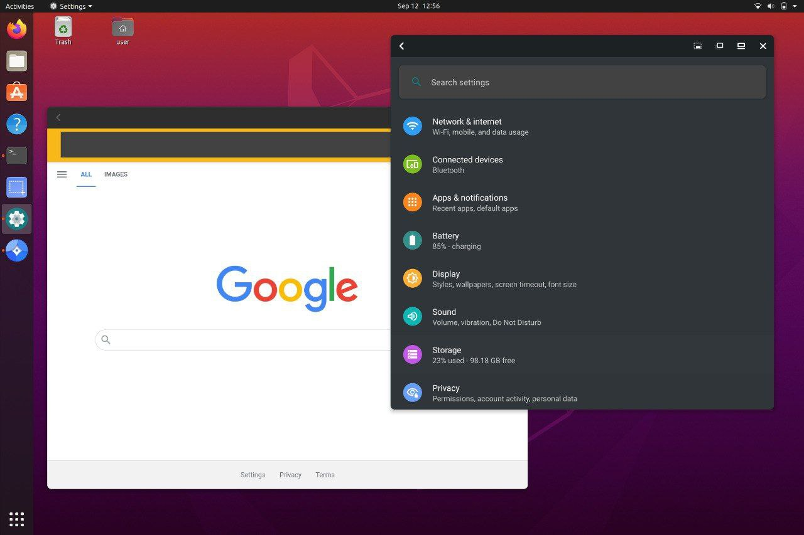

A container-based approach to boot a full Android system on a regular GNU/Linux system like Ubuntu.


A container-based approach to boot a full Android system on a regular GNU/Linux system like Ubuntu.
Waydroid uses Linux namespaces (user, pid, uts, net, mount, ipc) to run a full Android system in a container and provide Android applications on any GNU/Linux-based platform. The Android inside the container has direct access to needed hardwares.
The Project is completely free and open-source, currently our repo is hosted on Github.
Waydroid integrated with Linux adding the Android apps to your linux applications folder.
Waydroid expands on Android freeform window definition, adding a number of features.
For gaming and full screen entertainment, Waydroid can also be run to show the full Android UI.
Waydroid brings all the apps you love, right to your desktop, working side by side your Linux applications.
The Android inside the container has direct access to needed hardwares.
The Android runtime environment ships with a minimal customized Android system image based on LineageOS. The used image is currently based on Android 10

Our documentation site can be found at docs.waydro.id
Bug Reports can be filed on our repo Github Repo
Our development repositories are hosted on Github
Please refer to our installation docs for complete installation guide.
You can also manually download our images from
SourceForge
Installing Waydroid on Debian or Ubuntu can be done in just a few simple steps
Dependencies:
Replace DISTRO="bullseye" with your current target. Options: focal, bullseye, hirsute
export DISTRO="bullseye" && \
sudo curl https://repo.waydro.id/waydroid.gpg --output /usr/share/keyrings/waydroid.gpg && \
echo "deb [signed-by=/usr/share/keyrings/waydroid.gpg] https://repo.waydro.id/ $DISTRO main" > ~/waydroid.list && \
sudo mv ~/waydroid.list /etc/apt/sources.list.d/waydroid.list && \
sudo apt updateThen install Waydroid
sudo apt install waydroid
And start the init process:
sudo waydroid init
After installing, you will want to start the waydroid-container service
sudo systemctl start waydroid-container
Then launch waydroid container:
sudo waydroid container start
And launch the session:
waydroid session start
Then launch the waydroid app in full UI mode by running the Waydroid app in the app drawer, or through the terminal:
waydroid show-full-ui
For further instructions, please visit the docs site here
We have started creating a few fully-integrated distros in order to demonstrate some of the possibilities that Waydroid can help achieve.
Each of the distros we produce will also showcase some of the work from our growing community of contributors.
Our initial alpha releases of this integration are based on Ubuntu 20.04 (focal) and Ubuntu 21.10 (impish), and include many added tools and scripts to help open up what is possible.
Here are the members of our team